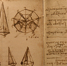

For every minute spent in organizing, an hour is earned
Tuesday February 2nd, 2009
Pellentesque habitant morbi tristique senectus et netus et malesuada fames ac turpis egestas. Vestibulum tortor quam, feugiat vitae, ultricies eget, tempor sit amet, ante. Donec eu libero sit amet quam egestas semper. Aenean ultricies mi vitae est. Mauris placerat eleifend leo. Quisque sit amet est et sapien ullamcorper pharetra. Vestibulum erat wisi, condimentum sed, commodo vitae, ornare sit amet, wisi. Aenean fermentum, elit eget tincidunt condimentum, eros ipsum rutrum orci, sagittis tempus lacus enim ac dui. Donec non enim in turpis pulvinar facilisis. Ut felis. Praesent dapibus, neque idcursus faucibus, tortor 
Da Vinci's notebook neque egestas augue, eu vulputate magna eros eu erat. Aliquam erat volutpat. Nam dui mi, tincidunt quis, accumsan porttitor, facilisis luctus, metus.
Pellentesque habitant morbi tristique senectus et netus et malesuada fames ac turpis egestas. Vestibulum tortor quam, feugiat vitae, ultricies eget, tempor sit amet, ante. Donec eu libero sit amet quam egestas semper. Aenean ultricies mi vitae est. Mauris placerat eleifend leo. Quisque sit amet est et sapien ullamcorper pharetra. Vestibulum erat wisi, condimentum sed, commodo vitae.
Keep Reading →photo by
Elsie esq.
A clock is just a complex system of gears. Why all the gears? The more of them there are, the higher you can get the force to movement ratio and the longer it can run between winding.
photo by
stuartpilbrow
4 8 15 16 23 42. The bizarre numbers from LOST. What do they mean? Do they have something to do with time travel?
photo by
Robbert van der Steeg
Like a fun house mirror meets Dali. Time keeps on slipping slipping slipping.